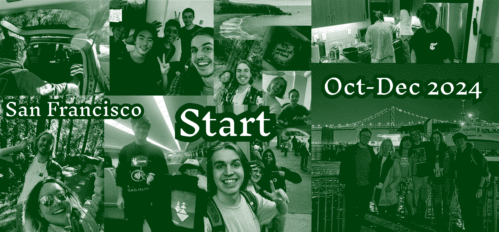

My Journey:
Hey, Thomas here! I’m years old (as of today), but as of writing this I am 20.24 years old. I spent the past 3 months in a hacker house in San Francisco with my best friend, Dieter.
I set out with the goal of building a software project that I love and that can generate "ramen profitability" such that I can survive from it. I succeeded in making something people used and getting first customer (my product is always.sh), but failed in the pursuit of making something that is truly useful (at the foundation, optimized for feature requests and false positives instead of trying to deeply what the real problems were).
This page is about my journey & the friends I made along the way. It's also about the many lessons we learned from the things I did well and the things I did not so well along the journey.
As I am writing this, I'm reaching the end of my journey and the start of a new journey. I'm visiting family right now for the holidays and will be flying back to San Francisco at the start of Janurary to start a new life. More on that later.
until next time... bom bom bommmmmmmmmmm...
~Thomas
In life we are always learning